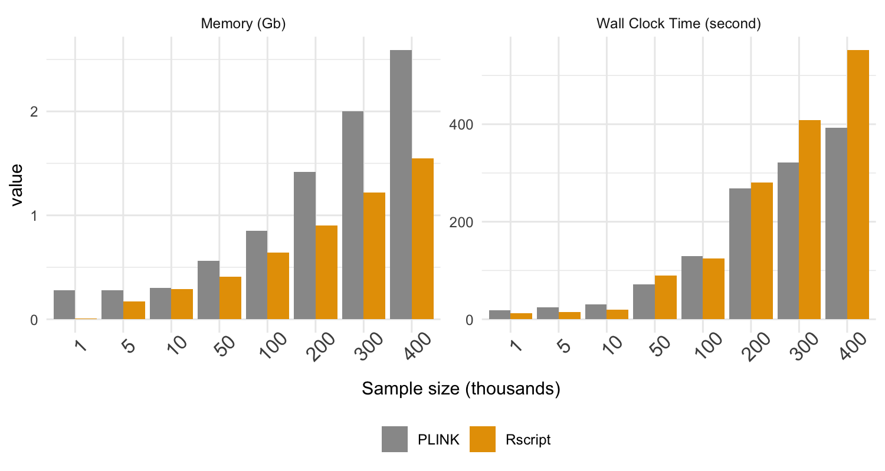

User (input data) scenarios
The gJSL2 analyzes each SNP at a time, it is straightforward to divide-and-conquer irrespective of your GUI choice. Here I list some possible user scenarios and our recommendation on which approach to use. We also report some performance metric to help you gauge the most appropriate option for your own computing specs.
To help assess the computational need, we sampled with replacement from the UKB X-chromosome data (restricted to 100 SNPs) to achieve sample sizes: 1,000, 5,000, 10,000, 50,000, 100,000, 200,000, 300,000, 400,000, and repeated the joint-location-scale analysis using a single core with 10GB memory via 1) PLINK R plug-in (does not support multi-thread) and 2) Rscript. The reason for keeping the 100 SNPs to estimate the performance metric is because the analysis can be easily divided to chunks (and computed over multiple cores for Rscript). To compare with X-chromosome wide analyses, we also report the memory and computational time used for UKB scale (n= 488,377, m = 15,179) for a full gJLS analysis.
From Figure 1, we observe roughly similar performance from the two options for sample size under 10,000, which requires ~0.30 GB and less than 30 sec of wall clock run time. This also implies that for data of this size and scale, the R-GUI options, such as Rstudio is also viable.
As sample size increased, PLINK becomes more demanding in terms of memory usage, but slightly faster than Rscript option. For the full UKB scale X-chromosome analysis, the computational times needed for either are very similarly: ~16 hrs for PLINK (using 3.5GB memory) and ~ 20hrs (using 1.2GB) for Rscript. This memory efficiency of Rscript is expected as the BEDmatrix used only map the required portion of genotype files into memory. However, the Rscript can be parallelized over multi-threads and when using 4 cores, the wall clock run time is reduced to ~10 hrs (using GB).

gJLS with INDVIDUAL-LEVEL genotype and phenotype data.
-
I have a relatively small dataset with < 5,000 samples and want to investigate particular markers or gene-set analysis (< 100). The R GUI should be sufficient for this purpose. PLINK binary data can be read with "BEDMatrix" and the .raw genotypes can be read in directly as a data.frame.
-
I have a relatively small dataset with < 5,000 samples and want to perform a genome-wide analysis. We recommend either the Rscript or PLINK R plugin as the analysis is straightforward and simple to break the job by chromosome or apply other filters within PLINK.
-
I have datasets with > 5,000 samples. The Rscript option will work nicely on binary files using "BEDMatrix", the multiple cores option can speed up the computational time, and the user specified write size makes sure that no results are lost in the process.
gS with INDVIDUAL-LEVEL genotype and phenotype data.
- I have "INDVIDUAL-LEVEL" genotype and phenotype data, but already ran the location analysis (GWAS) using other methods (e.g. PLINK or BOLT-LMM) or plan to use published GWAS p-values. I am interested in the "gS" analysis and the combined "gJLS" analyses using existing location p-values in place of the gL. The user can run scale analysis alone using the preferred approach depending on sample size and computational requirements. See next scenario for combining gL and gS.
gJLS with SUMMARY-LEVEL genotype and phenotype data.
I only have "SUMMARY-LEVEL" data (e.g. p-values) for location and scale association from external sources (e.g. GIANT) and am interested in the "gJLS" analysis. Once the gL and gS p-values have been obtained, the function gJLS2s() can be called in R GUI or computed via the Rscript to produce the combined gJLS p-values without access to individual-level data.